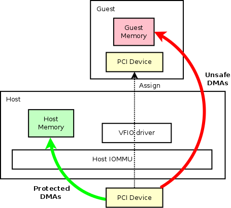
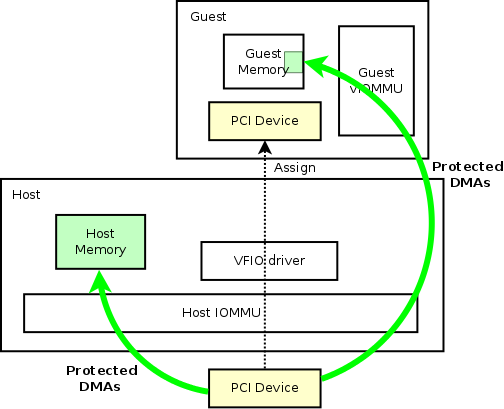
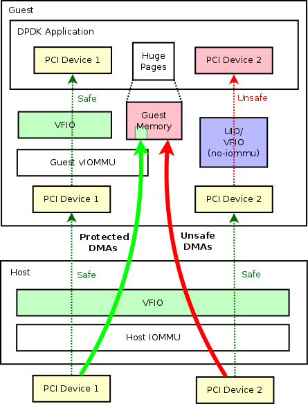
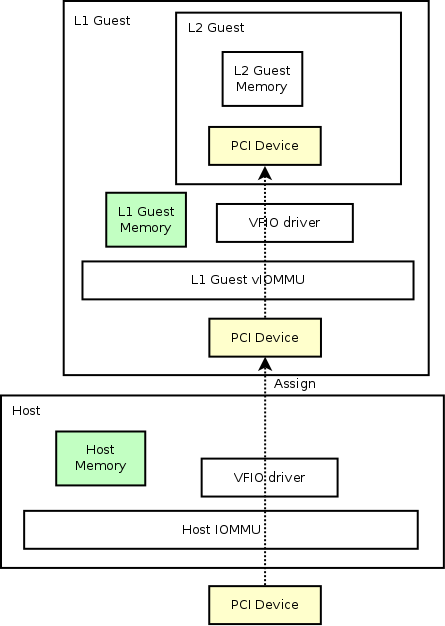

QEMU Device Assignment with vIOMMU Protection
Table of Contents
1 About
This page describes use cases for device assignment with vIOMMU.
This page will mostly talk about DMA protections that IOMMU/vIOMMU provides. Besides that, IOMMU can provide further protections like Interrupt Remapping (IR) in a similar way that DMA protections are done. A well protected system will not only need DMA but also IRQ protections.
2 Guest Device Assignment in General
Below picture shows a basic device assignment use case in QEMU.

Device Assignment without vIOMMU
Let's consider a generic PCI device above, which is a real hardware attached to host system. The host can use generic kernel drivers to drive the device. In that case, all the reads/writes of that device will be protected by host IOMMU, which is safe. The protected DMAs are shown in green arrow.
The PCI device can also be assigned to a guest. By leveraging VFIO driver in the host kernel, the device can be exclusively managed by any userspace programs like QEMU. In the guest with assigned device, we should be able to see exactly the same device just like in the host (as shown in the imaginary line). Here, the hypervisor is capable of modifying the device information, like capability bits, etc.. But that's out of the scope of this page. By assigning the device to a guest, we can have merely the same performance in guest comparing to in the host.
On the other hand, when the device is assigned to the guest, guest memory address space is totally exposed to the hardware PCI device. So there would have no protection when the device do DMAs to the guest system, especially writes. Malicious writes can corrupt the guest in no time. Those unsafe DMAs are shown with a red arrow.
That's why we need a vIOMMU in the guest.
3 Use Case 1: Guest Device Assignment with vIOMMU
To protect the guest memory from malicious assigned devices, we can have vIOMMU in the guest, just like what host IOMMU does to the host. Then the picture will be like:

Device Assignment with vIOMMU
In the above figure, the only difference is that we introduced guest vIOMMU to do DMA protections. With that, guest DMAs are safe now.
Here, our use case targets at the guests that are using kernel drivers. One thing to mention is that, currently, this use case can have significant performance impact on the assigned device. The dynamic allocation of guest IOVA mapping will cause lots of work in the hypervisor in order to sync the shadow page table with the real hardware. However, in cases where the memory mapping is static, there should not have a significant impact on the performance (DPDK is one use case, which I'll mention specifically in the next chapter). With the general case of dynamic memory mapping, more work is needed to further reduce the negative impact that the protection has brought.
4 Use Case 2: Guest Device Assignment with vIOMMU - DPDK Scenario
DPDK (the so-called DataPlan Development Kit) is vastly used in high performance scenarios, which moved the kernel space drivers into userspace for the sake of even better performance. Normally, the DPDK program can run directly inside a bare metal to achieve the best performance with specific hardware. Meanwhile, it can also be run inside guest to drive either an assigned device from host, or an emulated device like virtio ones.
For the guest DPDK use case mentioned, host can still continue leveraging DPDK to maximum the packet delivery in the virtual switches. OVS-DPDK is a good example.
Nevertheless, DPDK introduced a problem that since we cannot really trust any userspace application program, we cannot trust DPDK applications as well, especially if it can have full access to the system memory via the hardware and taint the kernel address space. Here vIOMMU protects not only the malicious devices like hardware errors, it also protects guest from buggy userspace drivers like DPDK (via VFIO driver in the guest).
Actually there are at least three ways that DPDK applications can manage a device in the userspace (and these methods are mostly general as well not limited to DPDK use cases):
- VFIO
- VFIO no-iommu mode
- UIO
UIO is going to be obsolete since its lacking of features and unsafety.
Let's consider a use case with guest DPDK application with two PCI devices. To clarify the difference of above methods, I used different ways to assign the device to the DPDK applications:

Device Assignment with vIOMMU - DPDK Scenario
In above case, PCI Device 1 and PCI Device 2 are two devices that are assigned to guest DPDK applications. In the host, both of the devices are assigned to guest using kernel VFIO driver (here we cannot use either "VFIO no-iommu mode" or "UIO", the reason behind is out of the scope of this page though :). While in the guest, when we assign devices to DPDK applications, we can use one of the three methods mentioned above. However, only if we assign device with generic VFIO driver (which requires a vIOMMU) could we get a safely assigned device. Either assigning the device by "UIO" or "VFIO no-iommu mode" is unsafe.
In our case, PCI Device 1 is safe, while PCI Device 2 is unsafe.
5 Use Case 3: Nested Guest Device Assignment
Another use case that device assignment with vIOMMU would help is that nested device assignment will work just like magic with it.
As we have mentioned in the first section, an IOMMU is required for device assignment to work. Here, to assign a L1 guest device to a L2 guest, we also need a vIOMMU inside L1 guest to build up the page mappings required for device assignment work.
Nested device assignment looks like:

Nested Device Assignment